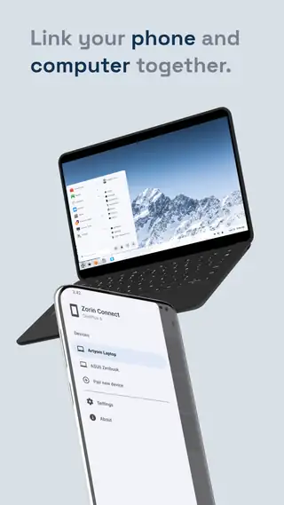
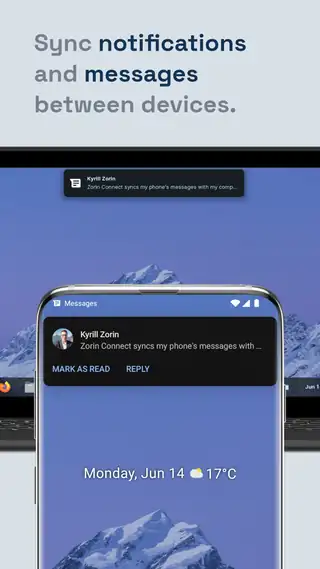

Zorin Connect
أدوات النظام
Zorin Connect provides several features to integrate your phone and your computer: * Sync your phone notifications with your computer * Browse photos from your phone * Reply to SMS messages * Share files and links between devices * Use your phone as a remote control for your computer The app seamles
✓ ترخيص مفتوح (GPL-2.0-only) · آخر تحديث: 2026-10-31
1.37.0الإصدار
6.9 MBالحجم
GPL-2.0-onlyالرخصة
Open in Kanzتحميل APK (6.9 MB)
Download APK
SHA-256: 20cacca2791284f849d2222fc229915c0814bc7aa2ac193f07e65c819be846ee


امسح الكود لفتح صفحة التطبيق
Scan to open this app page
لو كنز مش متثبت عندك: نزّل متجر كنز.
Not installed? Get the Kanz store.